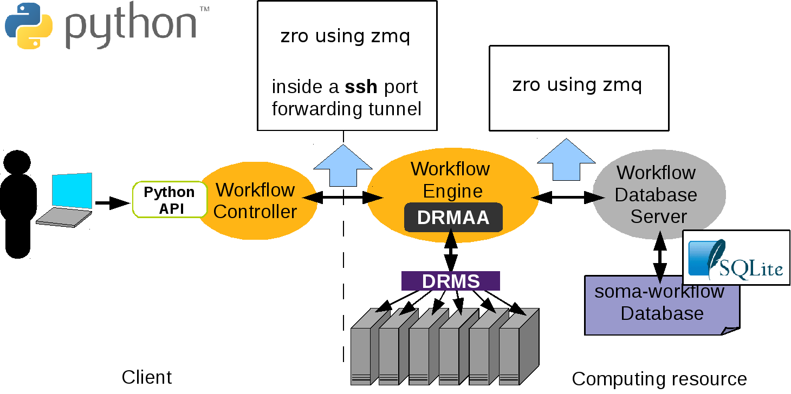
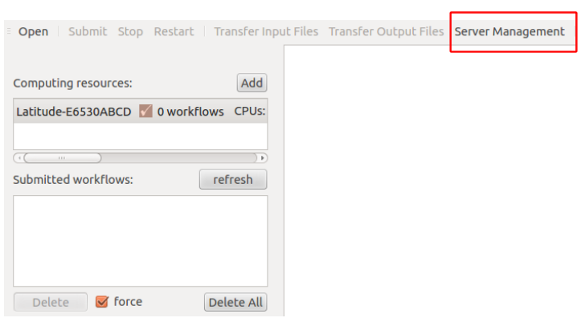
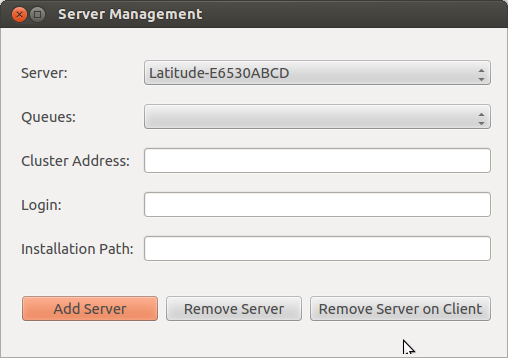

Installation and configuration¶
Mono process application on a multiple core machine¶
No configuration is needed to use Soma-workflow on a multiple core machine.
See Soma-workflow main page for installation.
Client-server application: Client¶
This page describes the installation and configuration of the Soma-workflow client.
Requirements¶
Python version 2.7 or more
Paramiko version 1.7 or more. Paramiko in only required if the computing resource is remote (see config).
For the GUI: Qt version 4.6.2 or more, PyQt version 4.7.2 or more, or PySide version 1.1.1 or more and optionally matplotlib version 0.99 or more
Installation¶
Download: soma-workflow
Installation:
$ sudo python setup.py install or $ python setup.py install --prefix my_directory
Start the GUI with the command soma_workflow_gui and/or import the soma_workflow.client module to use the Python API.
See also
Graphical User Interface for the GUI documentation, Python API for Soma-workflow Python API documentation and Examples.
Configuration (Created automatically)¶
The configuration syntax is the ConfigParser syntax. The configuration file is located in “$HOME/.soma-workflow.cfg”. This file will be created automatically once a server has been established (see Server installation using “Server Management”).
There is one section for each computing resource (that is for each Soma-workflow database server).
Only four items are required:
CLUSTER_ADDRESS
SUBMITTING_MACHINES only for remote ssh tunneling
QUEUES
LOGIN
The two first items are mandatory and the last ones are optional. The values of these configuration items are set up at each Soma-workflow server installation (see Server configuration (Created automatically)). Ask these item values to the Soma-workflow administrator if you did not install the server yourself.
The second item, SUBMITTING_MACHINES, is mandatory when the server connection is on a remote machine, and optional when client and server is the same machine (and does not require a ssh connection and tunneling). The general case thus is to use ssh and provide SUBMITTING_MACHINES. The local client/server mode however may be useful to allow client disconnections (and for testing purposes).
Configuration file example (2 computing resources are configured):
[Titan]
CLUSTER_ADDRESS = titan.mylab.fr
SUBMITTING_MACHINES = titan0
QUEUES = test long
LOGIN = my_login_on_titan
[LabDesktops]
CLUSTER_ADDRESS = mydesktop.mylab.fr
SUBMITTING_MACHINES = mydesktop
Configuration items required on the client side
- CLUSTER_ADDRESS
Address of the host computing resource host to log on. Address of the host which has to be used to access the cluster remotely.
- SUBMITTING_MACHINES
Address of the submitting hosts, that are the hosts from which the jobs are supposed to be submitted. In most of the cases, there is only one submitting host. The addresses are local on the cluster. Syntax: “host1 host2 host3”
Configuration items optional on the client side:
- ALLOWED_PYTHON_VERSIONS
Added in Soma-Workflow 3.0
a coma-separated list of major python versions that can be used with the resource. It can be used to filter out unmatching versions so that the GUI automatically connects to a matching one, and does not allow to connect to others.
- LOGIN
To pre-fill the login field in the GUI when login to the resource.
- QUEUES
List of the available queues. This item is only used in the GUI to make easier the selection of the queue when submitting a workflow. Syntax: “queue1 queue2 queue3”
- PYTHON_COMMAND
Option added in Soma-Workflow 3.1.
May be set on client side in the computing resource configuration, to specify the way the client will start the server. Soma-workflow server is normally started using Python language modules, as commands in the shape:
python -m soma_workflow.start_workflow_engineIf this config option is not set, the
pythoncommand is automatically adjusted to eitherpython2orpython3to match the client python version (they should be the same due to objects formats (“pickles”)).But in some cases, including when the soma-workflow servers should run inside a container like Casa-Distro Singularity containers, entering the container involves an additional indirection, so we should specify, like:
PYTHON_COMMAND = bv python
Client-server application: Server¶
This page explains how to configure, install and run the Soma-workflow database server.
In the client-server mode the communication between the processes is done using the module zro which is included in the soma_workflow package and is inspired on Pyro4 syntax and uses the zmq package. In principle object are registered to the zro object server. At registration an uri is produced which can be used by other programs to instanciation proxy objects.A method call on a proxy object will contact the remote object and return its answer. For instance, the Workflow Engines query a proxy object of the database server to call its method.
Requirements¶
{kind=link}
Here is the list of the server dependencies:
A distributed resource management system (DRMS) such as Grid Engine, Condor, Torque/PBS, LSF..
A implementation of DRMAA 1.0 for the DRMS in C if available, unless a specific scheduler exists
Python version 2.7 or more
SQLite version 3 or more
The implementations of DRMAA tested successfully with Soma-workflow:
DRMS
DRMAA implementation
Torque 2.0.0
PBS DRMAA 1.0.13 from http://apps.man.poznan.pl/trac/pbs-drmaa
LSF 7.0
FedStage LSF DRMAA 1.0.3
Grid Engine 6.2u5&6
Embeded implementation
Condor 7.4.0
Embeded implementation
On the contrary, we had problems with the following implementations:
DRMS
DRMAA implementation
PBSPro 18.1.2
DRMAA is failing, use the PBSPro scheduler
Server installation using “Server Management”¶
In the menu of soma-workflow, we can see a button called, Server Management. See the menu of the below figure, we can find a “Server Management” button
{kind=link}
Opening “Server Management” button, and then we can see three buttons, called: Add Server, Remove Server, Remove Server on Client, as shown in the below figure. Since the configuration is needed for both sides (client and server), “Remove Server” means that remove the installation on the server and client (BE CAREFULL: it will lose all your soma-workflow data on your server and client, $HOME/.soma-workflow and $HOME/.soma-workflow.cfg). “Remove Server on Client” means that it will remove all the data only on client side, while the server side is still running as usual.
{kind=link}
Opening “Add Server” button, we can see a window as shown below:

Before the server installation, we strongly recommend to use SSH with authentication key instead of password. See “http://askubuntu.com/questions/46930/how-can-i-set-up-password-less-ssh-login”. Otherwise, you need to input password each time. We should setup the Server Address, SSH Login, while the other items are optional. (password is not mandatory when you are using authentication key)
Since the configuration is needed for both sides (client and server), the first button, called “Install on Server and Client”, is used for configuring both sides. Since many clients can connect to one server, “Setup Client without Installation on Server” is used for configurating only client side.
Since soma-workflow is based on the DRMAA on the server side, to make sure that your LD_LIBRARY_PATH contains libdrmaa.so or export DRMAA_LIBRARY_PATH to the absolute path of libdrmaa.so on your server.
Server configuration (Created automatically)¶
This section defines the required and optional configuration items. This file can be found on the both side of client and server with the path “$HOME/.soma-workflow.cfg”.
The configuration file syntax is the ConfigParser syntax. All the configuration items are defined in one section. The name of the section is the resource identifier (ex: “Titan”).
Configuration file example:
[Titan]
DATABASE_FILE = path/soma_workflow.db
TRANSFERED_FILES_DIR = path/transfered_files
SERVER_NAME = soma_workflow_server_for_titan
# optional limitation of the jobs in various queues
MAX_JOB_IN_QUEUE = {10} test{50} long{3}
MAX_JOB_RUNNING = {100} test{500} long{30}
# optional logging
SERVER_LOG_FILE = path/logs/log_server
SERVER_LOG_FORMAT = %(asctime)s => line %(lineno)s: %(message)s
SERVER_LOG_LEVEL = ERROR
ENGINE_LOG_DIR = path/logs/
ENGINE_LOG_FORMAT = %(asctime)s => line %(lineno)s: %(message)s
ENGINE_LOG_LEVEL = ERROR
MPI_LOG_DIR = path/logs/mpi_logs
MPI_LOG_FORMAT = %(asctime)s => %(module)s line %(lineno)s: %(message)s %(threadName)s)
# remote access information
CLUSTER_ADDRESS = titan.mylab.fr
SUBMITTING_MACHINES = titan0
Configuration items required on the server side:¶
- TRANSFERED_FILES_DIR
Path of the directory where the transfered files will be copied. The directory must be empty and will be managed entirely by Soma-workflow.
Warning
Do not copy any file in this directory. Soma_workflow manages the entire directory and might delete any external file.
- SERVER_NAME (to be replace with DB_SERVER_NAME, will be clearer)
Name of the database server.
Configuration items optional on the server side:¶
- DATABASE_FILE
Path of the SQLite database file. The file will be created the first time the database server will be started.
This option was mandatory up to soma-workflow-2.6, and is optional since 2.7. Additionally in 2.7, the database version number will be appended to the database file name, to avoid mixing several incompatible databases when switching between different soma-workflow versions.
- MAX_JOB_IN_QUEUE
Maximum number of job in each queue. If a queue does not appear here, Soma-workflow considers that there is no limitation. The syntax is “{default_queue_max_nb_jobs} queue_name1{max_nb_jobs_1} queue_name_2{max_nb_job_2}”. Example: “{5} test{20}”
- MAX_JOB_RUNNING (new in 2.8)
Like MAX_JOB_IN_QUEUE, but also limits the number of jobs which may be running through a given queue. It thus includes actually running jobs, plus queued jobs (which may get to running status at any time).
Note that cluster queues may impose their own running jobs limits, which are not controlled by this parameter, thus the minimum limit will actually be effective.
- PATH_TRANSLATION_FILES
Specify here the shared resource path translation files, mandatory to use the SharedResourcePath objects (see Shared Resource Path). Each translation file is associated with a namespace. That way several applications can use the same identifiers without risk. The syntax is “namespace_1{translation_file_path_11} namespace1{translation_file_path_12} namespace2{translation_file_path_2}”
- DRMAA_IMPLEMENTATION
Set this item to “PBS” if you use FedStage PBS DRMAA 1.0 implementation, otherwise it does not has to be set. Soma-workflow is designed to be independent of the DRMS and the DRMAA implementation. However, we found two bugs in the FedStage PBS DRMAA 1.0 implementation, and correct it temporarily writing specific code for this implementation in Soma-workflow at 2 locations (soma_workflow.engine Drmaa class: __init__ and submit_job method).
- NATIVE_SPECIFICATION
Some specific option/function of the computing resource you want to use might not be available among the list of Soma-workflow Job attributes. Use the native specification attribute to use these specific functionalities. Once configured it will be applied to every jobs submitted to the resource unless a different value is specified in the Job attribute native_specification.
- Example: Specification of a job walltime and more:
using a PBS cluster: NATIVE_SPECIFICATION= -l walltime=10:00:00,pmem=16gb
using a SGE cluster: NATIVE_SPECIFICATION= -l h_rt=10:00:00
- SCHEDULER_TYPE
- Scheduler type:
local_basic: simple builtin scheduler (the one used for the local single process mode). It may be used also on a remote machine (without DRMS support).
drmaa: cluster or grid scheduler, based on DRMAA. This is the scheduler used normally on servers, and is the default in such a case.
mpi: mono-process scheduler using MPI for the Mono process application on clusters (light) mode.
- SHARED_TEMPORARY_DIR
Directory where to generate temporary files used between jobs. The directory should be visible by all processing nodes (on a cluster), and the filesystem should be large enough to store temporary files during a whole workflow execution.
- CONTAINER_COMMAND
This item is a prefix prepended to all jobs commands. It is typically used to drive execution through a container system such as singularity or docker. In this situation, jobs commandlines have to specify the container command and options, for instance:
singularity exec --bind /data_dir /opt/singularity_images/appropriate_image.simg command_to_run arg1 arg2...Moreover Soma-Workflow may set and use two environment variable (in “semi-dynamic” workflows where input parameters of a job are outputs from an upstream one), so the container has to carry these variables when starting, so it would be:
SINGULARITYENV_SOMAWF_INPUT_PARAMS=$SOMAWF_INPUT_PARAMS SINGULARITYENV_SOMAWF_OUTPUT_PARAMS=$SOMAWF_OUTPUT_PARAMS singularity exec --bind /data_dir /opt/singularity_images/appropriate_image.simg command_to_run arg1 arg2...The CONTAINER_COMMAND parameter will allow to build the container-related beginning for jobs commandlines. It is actually a list, given in a python syntax. Shell Environment variables replacement is allowed, and a special pattern,
{#command}allows to replace the actual job commanline at a given location.This config variable has appeared in Soma-Workflow 2.10.
Let’s take a simple example first:
container_command = ['singularity', 'exec', '--bind', '/data_dir', '--bind', '/software_dir', '/opt/singularity_images/appropriate_image.simg', 'entrypoint']Here, the job command will be appended after the
entrypointprogram (if defined in the container image) which will run inside singularity. Let’s suppose the job commandline is['ls', '/'], the command which will be actually run is:singularity exec --bind /data_dir --bind /software_dir /opt/singularity_images/appropriate_image.simg entrypoint ls /Now if we need environment variables (and we do!) or further customization, for instance to set a library path variable to access a library with custom installation, we will need to run a shell to setup the variable then run the program:
sh -c 'SINGULARITYENV_SOMAWF_INPUT_PARAMS=$SOMAWF_INPUT_PARAMS SINGULARITYENV_SOMAWF_OUTPUT_PARAMS=$SOMAWF_OUTPUT_PARAMS LD_LIBRARY_PATH=/software_dir/lib:$"LD_LIBRARY_PATH" ls /'Here the job command with arguments must be within the
'quotes aftersh -cto run in the shell command. Then the CONTAINER_COMMAND variable for Soma-Workflow has to be:container_command = ['singularity', 'exec', '--bind', '/data_dir', '--bind', '/software_dir', '/opt/singularity_images/appropriate_image.simg', 'sh', '-c', 'LD_LIBRARY_PATH="/ software_dir/lib:$LD_LIBRARY_PATH" entrypoint {#command}']This variable, being set only on server-side, allows to run workflows not aware of any container system on the computing resource, and can be set differently (or not set) on different computing resources.
BrainVisa containers case (casa-distro releases): Starting with BrainVisa 5.0, BrainVisa is distributed as Singularity virtual containers. The installation setup provides a command
bv, which takes care of all options to call the container. Thus theCONTAINER_COMMANDhere could just be:container_command = ['/home/johndoe/brainvisa/bin/bv']Since BrainVisa 5.1, the environment variables
SOMAWF_INPUT_PARAMSandSOMAWF_OUTPUT_PARAMSare automatically exported.- SERVER_LOG_LEVEL
Server logging level as defined in the logging module.
- SERVER_LOG_FORMAT
Server logging format as defined in the logging module.
- ENGINE_LOG_DIR
Directory path where to store Workflow Engine log files.
- ENGINE_LOG_LEVEL
Workflow Engine logging level as defined in the logging module.
- ENGINE_LOG_FORMAT
Workflow Engine logging format as defined in the logging module.
- MPI_LOG_DIR
Directory path where to store the MPI workflow runner log files. (only used in MPI mode)
- MPI_LOG_FORMAT
MPI runner logging format as defined in the logging module.
Parallel job configuration:¶
The items described here concern the parallel job configuration. A parallel job uses several CPUs and involves parallel code: MPI, OpenMP for example.
Warning
The documentation is under construction.
Obsolete config entries¶
NAME_SERVER_HOST removed in v3, this was for the Pyro name server.
Mono process application on clusters¶
This mode is called light mode, it is the installation you need if you are not interested in the remote access and disconnection features (see More features with the client-server application)
Requirements¶
The requirements are identical to the server installation requirements. If you do not intend to access an other computing resource with the remote access feature, the installation of zmq can be skipped.
The requirements are thus:
A distributed resource management system (DRMS) such as Grid Engine, Condor, Torque/PBS, LSF..
A implementation of DRMAA 1.0 for the DRMS in C if available, unless a specific scheduler exists
Python version 2.7 or more
SQLite version 3 or more
For the GUI: Qt version 4.6.2 or more, PyQt version 4.7.2 or more, or PySide version 1.1.1 or more, and optionally matplotlib version 0.99 or more
More details about the implementation of DRMAA can be found in the server installation section (see Requirements).
Installation¶
Choose a resource identifier for the computing resource, ex: “Local Titan”
Create a configuration file (see Configuration) at the location $HOME/.soma-workflow.cfg. You can also choose your own path for the configuration file and set the “SOMA_WORKFLOW_CONFIG” environment variable with this path or put it in the /etc/ directory.
Start the GUI with the command soma_workflow_gui and/or import the soma.workflow.client module to use the Python API.
See also
Graphical User Interface for the GUI documentation, Python API for Soma-workflow Python API documentation and Examples.
Configuration¶
This section defines the required and optional configuration items for the light mode.
The configuration file syntax is the ConfigParser syntax. All the configuration items are defined in one section. The section name corresponds to the name you chose for the resource: “Local Titan” in the example.
Configuration file example:
[Local Titan]
LIGHT_MODE = True
TRANSFERED_FILES_DIR = path/soma_workflow.db
DATABASE_FILE = path/transfered_files
Required configuration items:
- LIGHT_MODE
This item can be set up with any value, however it must be defined to use soma_workflow in the light mode.
- TRANSFERED_FILES_DIR
Path of the directory where the transfered files will be copied. The directory must be empty and will be managed entirely by Soma-workflow. This item is required to let you run workflow with file transfer for test purposes in the light mode.
Warning
Do not copy any file in this directory. Soma_workflow manages the entire directory and might delete any external file.
Optional configuration items:
Many optional configuration item can be added to customize the installation, see Server configuration (Created automatically) for a full list of the items and their description.
In addition, a few more optional configuration items are available:
- DATABASE_FILE
Path of the SQLite database file. The file will be created the first time the application is launch.
This option was mandatory up to soma-workflow-2.6, and is optional since 2.7. Additionally in 2.7, the database version number will be appended to the database file name, to avoid mixing several incompatible databases when switching between different soma-workflow versions.
- SOMA_WORKFLOW_DIR (new in 2.7)
Directory which will contain soma_workflow files (typically, the SQlite database, and file transfers).
In addition Local scheduler options can be used in the configuration: CPU_NB, MAX_CPU_NB, and SCHEDULER_INTERVAL.
Running servers and jobs in a container¶
When Soma-Workflow is installed as part of the BrainVISA distribution, it now runs inside a container or a virtual machine. Users thus would need to run the Soma-Workflow servers in such a container, and run jobs also in the container.
There are two main use cases:
Local execution¶
It runs transparently out of the box.
This mode is using the local machine (and system) to run processing in parallel. As the client and the scheduing is run from a container or virtual machine, processing will also run in the same system (or say, subsystem), this means in the same container or virtual machine, and thus will get access to all BrainVISA distribution software.
Remote execution¶
Remote execution means that the client will connect to a remote machine (a cluster typically) and run jobs remotely. The remote computing resource thus needs to have the software installed. This software installation is in two parts:
The soma-workflow server needs to be installed on the cluster front-end machine (the one you connect via
sshto run jobs).software need to be installed on the computing nodes which actually run the jobs. This may include BrainVISA software, and external software used by it (such as SPM, FSL, Freesurfer).
In most cases, the front-end machine and cluster nodes share a filesystem where you can install the software, thus you can install the BrainVISA distribution just once on this shared filesystem.
Programs will be run from cluster jobs, so the virtual machine distribution of BrainVISA is generally not the most convenient: VMs have to be started first, then programs have to be called inside them. Well it’s possible but not the easiest to setup.
The container system based on Singularity allows to run jobs in the most convenient way. Singularity needs to be installed on the cluster nodes. Installing it requires some admin permissions, so you will have to contact the cluster admins, but once installed it doesn’t require special permissions, any user can run it (contrarily to Docker).
Once the software is installed, we need to use it the right way. There are 2 different places to be configured: the Soma-Workflow server, and the software for computing jobs.
Soma-workflow server needs to be called remotely from the client. When the client connects via
ssh, it runs the server as Python modules on the cluser front-end. There are 3 ways to make them available:run the server inside the container. In this situation the server config files
$HOME/.soma-workflow.cfgshould be in the container home directory. To start it inside the container, the client configuration has to contain the PYTHON_COMMAND option, which will specify how to call it. Typically, if the front-end server (host) machine has been configured to contain the BrainVisa installationbin/directory (see install instructions), callingbv pythoninstead ofpythonwill be OK. Otherwise using the full path thbvis also OK.If the cluster front-end (generally a Unix / Linux system) has Python installed, with the required modules (PyZMQ mainly) and can run the server natively: setting the
PYTONPATHenvironment variable in a config file ($HOME/.bash_profileor$HOME/.bashrcif you are using a bash-like shell) to the python directory containing Soma-Workflow should be OK. In a singularity image the files are not seen from the host system, thus a “read-write install” may be required.Like above, running natively on the front-end machine, but using Soma-Workflow sources: clone them from https://github.com/populse/soma-workflow and set the
PYTONPATHenvironment variable to point to it.
To run jobs inside the container,
either the
bindirectory of the BrainVISA installation directory is in the userPATHin the cluster nodes: then commands will be transparently redirected to the container. Nothing more has to be done (maybe the brainvisa container config to define mount point etc, but nothing specific to soma-workflow).Or the option CONTAINER_COMMAND may be used, to specify the indirection, typically:
container_command = ['/home/johndoe/brainvisa/bin/bv']
Limitations¶
There are a few limitaions to the client / server processing
Cluster admins may not like servers running on the login node
Why it’s difficult and often impossible to run the Soma-Workflow server inside a container
Cluster admins may not like servers running on the login node¶
The SWF server needs to be contacted by network from the client machine: this means connecting from “outside” the cluster network (through a theoretically secure ssh connection tunnel), and running a server on the login node of the cluster. This may be seen as a security issue by admins, and it may somawhat load the node (especially when managing large workflows). Thus this is not allowed in all infrastructures.
It might be possible to run the server inside a cluster worker node, but with additional indirections, and at the condition that the worker nodes can submit jobs to the cluster job manager. We have not really tested this architecture…
The other solution is to use the MPI workflow runner, which runs entirely inside a multiprocessor (multi-node) job. But it’s not integrated in the standard client/server API and GUI.
Why it’s difficult and often impossible to run the Soma-Workflow server inside a container¶
The server is the process which starts the worker jobs, either directly, or through the DRMS (cluster jobs manager). If it’s inside a container, there are the following issues:
in a DRMS environment, the containerized server may not be able to access the DRMS (which is outside the container).
otherwise, using the “local_basic” scheduler jobs would be started inside the container too. Sometimes it’s what we want, but sometimes not.
To get out of the container, there is no standard and universal way: containers are not made for this, and the “outside” environment may be any foreign system (a Windows or Mac system, for instance).
If the outside system is running a ssh server, then the ssh localhost command may work, and could be setup in the CONTAINER_COMMAND prefix in the server config.
Server configuration examples¶
Local mode on a server, with client/server access¶
This mode allows remote access from a client to a computing server which does not have any DRMS and is using Soma-Workflow’s local (simple) scheduler.
Note
It is better not to use the local scheduler on machines shared between several users, as this basic scheduler does not handle inter-user load very well.
Server configuratinon ($HOME/.soma-workflow.cfg):
[averell]
CLUSTER_ADDRESS = averell.mylab.fr
SUBMITTING_MACHINES = averell.mylab.fr
LOGIN = my_login
SCHEDULER_TYPE = local_basic
SERVER_NAME = averell
ENGINE_LOG_DIR = /home/my_login/.soma_workflow/averell/logs
TRANSFERED_FILES_DIR = /home/my_login/.soma_workflow/averell/file_transfers
DATABASE_FILE = /home/my_login/.soma_workflow/averell/soma_workflow.db
The local scheduler also uses its own config file ($HOME/.soma-workflow-scheduler.cfg):
The scheduler options are:
- CPU_NB
Number of CPU cores to be used. May be 0. From Soma-workflow 2.8, this number is not a maximum any longer, but rather a minimum. See MAX_CPU_NB.
- MAX_CPU_NB (new in 2.8)
Maximum number of CPU cores to be used. 0 means all processors detected on the machine. The number of processors used (provided there are enough jobs to feed them) is at least CPU_NB, and at most MAX_CPU_NB, depending on the machine load at the time of job submission. This load adjustment allows to use soma-workflow on a shared machine using the local scheduler. However this load adjustment is not an advanced load balancing feature, it is a cheap solution to avoid heavy overloading, but it is very limited and approximative.
When not specified (or zero), the number of available cores will be used as max, and 0 as cpu_nb.
- SCHEDULER_INTERVAL
Polling interval for the scheduler, in seconds. The default is 1 second.
Ex:
[averell]
CPU_NB = 2
MAX_CPU_NB = 16
SCHEDULER_INTERVAL = 1